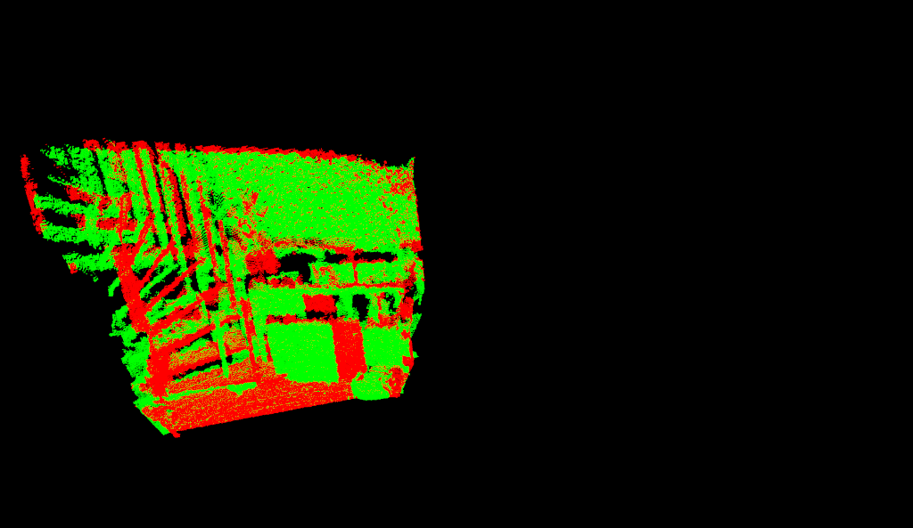
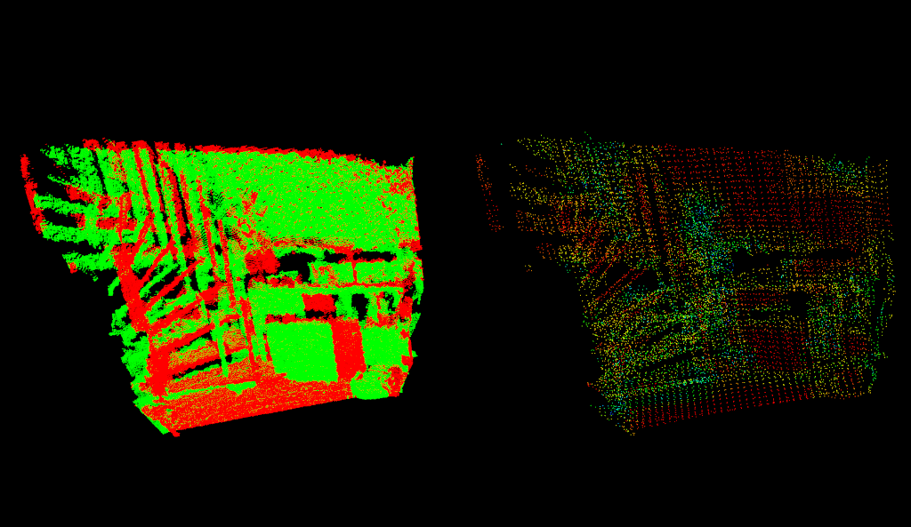
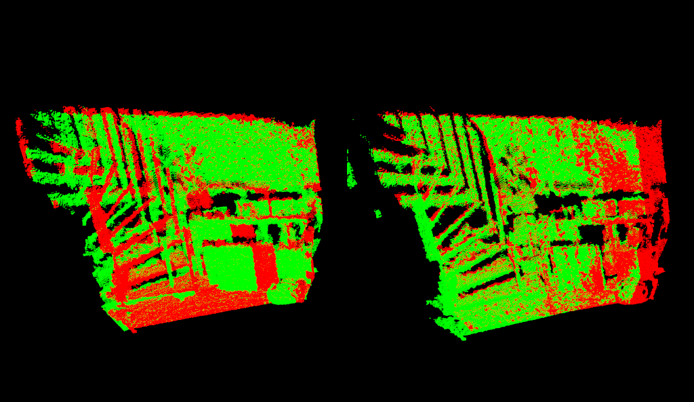

How to incrementally register pairs of clouds¶
This document demonstrates using the Iterative Closest Point algorithm in order to incrementally register a series of point clouds two by two.
The code¶
The explanation¶
Declarations¶
These are the header files that contain the definitions for all of the classes which we will use.
Creates global variables for visualization purpose
Declare a convenient structure that allow us to handle clouds as couple [points - filename]
Define a new point representation (see Adding your own custom PointT type for more on the subject)
Registering functions¶
Let’s see how are our functions organized.
We now arrive to the actual pair registration.
// Align pcl::IterativeClosestPointNonLinear<PointNormalT, PointNormalT> reg; reg.setTransformationEpsilon (1e-6); // Set the maximum distance between two correspondences (src<->tgt) to 10cm // Note: adjust this based on the size of your datasets reg.setMaxCorrespondenceDistance (0.1); // Set the point representation reg.setPointRepresentation (boost::make_shared<const MyPointRepresentation> (point_representation)); reg.setInputCloud (points_with_normals_src); reg.setInputTarget (points_with_normals_tgt);
reg.setMaximumIterations (2);
And is manually iterated (30 times in our case):
for (int i = 0; i < 30; ++i) { [...] points_with_normals_src = reg_result; // Estimate reg.setInputCloud (points_with_normals_src); reg.align (*reg_result); [...] }
During each iteration, we keep track of and accumulate the transformations returned by the ICP:
Eigen::Matrix4f Ti = Eigen::Matrix4f::Identity (), prev, targetToSource; [...] for (int i = 0; i < 30; ++i) { [...] Ti = reg.getFinalTransformation () * Ti; [...] }
for (int i = 0; i < 30; ++i) { [...] if (std::abs ((reg.getLastIncrementalTransformation () - prev).sum ()) < reg.getTransformationEpsilon ()) reg.setMaxCorrespondenceDistance (reg.getMaxCorrespondenceDistance () - 0.001); prev = reg.getLastIncrementalTransformation (); [...] }
// // Get the transformation from target to source targetToSource = Ti.inverse(); // // Transform target back in source frame pcl::transformPointCloud (*cloud_tgt, *output, targetToSource); [...] *output += *cloud_tgt; final_transform = targetToSource;
Compiling and running the program¶
Create a file named pairwise_incremental_registration.cpp and paste the full code in it.
Create CMakeLists.txt file and add the following line in it:
Copy the files from github.com/PointCloudLibrary/data/tree/master/tutorials/pairwise in your working folder.
After you have made the executable (cmake ., make), you can run it. Simply do:
$ ./pairwise_incremental_registration capture000[1-5].pcd
You will see something similar to:
  {kind=link}
{kind=link}
{kind=link}
Visualize the final results by running:
$ pcl_viewer 1.pcd 2.pcd 3.pcd 4.pcd
{kind=link}

NOTE: if you only see a black screen in your viewer, try adjusting the camera position with your mouse. This may happen with the sample PCD files of this tutorial.